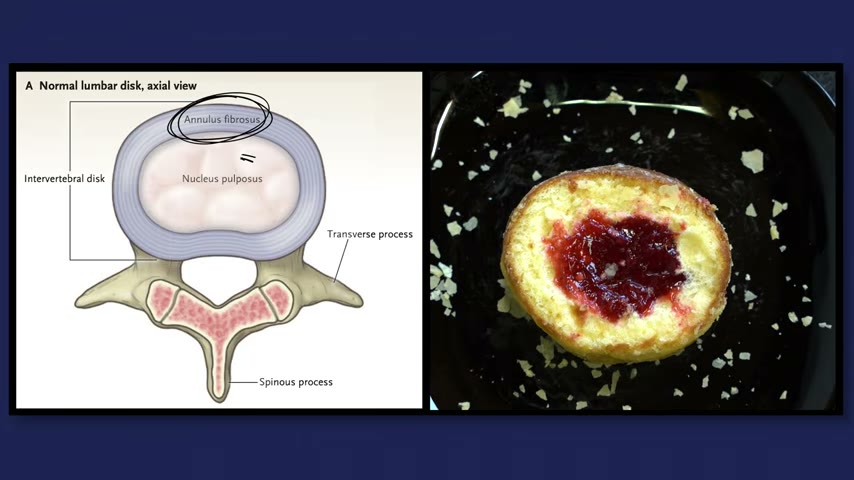
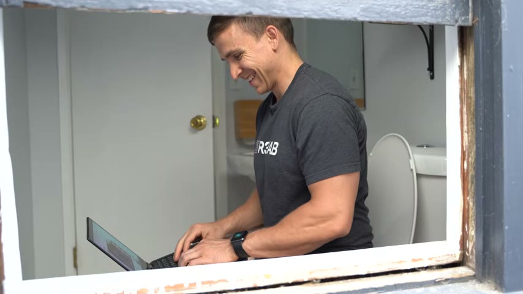
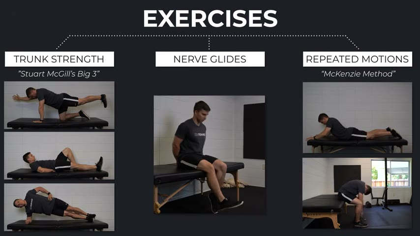

What Is Sciatica
Today I’m going to answer some questions about sciatica as it relates to disc herniations. What is sciatica? Are discs like jelly donuts? Can your disc slip? Is your nerve trapped or pinched? Is there a best exercise? Is surgery a good option? If you’re looking for a video that promises a quick fix, this isn’t it. But I hope the information that I provide is even more valuable.
What is sciatica? Well, it’s often a catch-all word that people use to describe symptoms down their leg. Individuals might characterize it as pain, burning, numbness, tingling, or whatever descriptor fits what they’re feeling. Sometimes it’s really hard to describe and these symptoms may or may not coincide with low back pain.
Now, many people associate sciatica with the sciatic nerve because a sciatic nerve travels along the back of the thigh. That’s not quite right, though. The sciatic nerve does travel along the back of the leg, but it’s formed from a bunch of nerves that come together in your low back region. And rather than the symptoms in your leg being caused by irritation of the sciatic nerve, it’s much more common that one of those nerves in the low back is irritated.
Sciatica is somewhat of an ambiguous umbrella term. In the medical community, if you have pain down your leg that’s associated with an irritated nerve in the low back, that would be called lumbar radicular pain. If you have numbness or a loss of strength because of the same irritated nerve, that’s called lumbar radiculopathy. They’re not exactly the same thing because lumbar radicular pain refers to the pain in the leg, whereas lumbar radiculopathy refers to neurological changes like numbness and weakness. But they can often happen together. And for the simplicity of this video, I’m just going to keep using the word sciatica.
Disc Herniations Explained
Disc herniations are the most common culprit of sciatica and are classified as protrusions, extrusions, and sequestrations. There’s also a different category known as a bulging disc. Once again, for the purpose of the video, I’m just going to clump everything together as a disc herniation.
To help you understand how a disc herniation can contribute to symptoms in your leg, I’m going to answer a few questions.
Is your disc like a jelly donut? No. This analogy is used because similar to a jelly donut, there’s an outer layer of the disc known as the annulus fibrosus and an inner component known as the nucleus pulposus. The inner layer can push beyond the boundary of the outer layer as you can see in the pictures. But the process isn’t as simple or terrifying as it’s made out to be. And the disc isn’t that fragile. Unlike a jelly donut, your discs can resist compression, tension, torsion. They’re strong and adaptable.

In the case of disc herniations, there’s also some good news. One, systematic reviews by Chewet and Zongol show that discs can heal on their own over time. In fact, worse herniations are more likely to heal. Two, size doesn’t always matter. Carpinadol in 2001 reported that the degree of disc displacement in MRI did not correlate with sciatic symptoms. And three, a well-known systematic review in 2015 demonstrated how common it is to have these changes on MRI and no symptoms whatsoever, even in our 20s and especially as we age.
Can your disc slip? No. I don’t know the origin of this phrase, but it’s just referring to a disc herniation. I’m not a fan of it because it can create some misinformation and create some unhelpful visuals of what’s happening in your low back. Your disc doesn’t slip and go anywhere. It’s still there doing its job.
Is your nerve trapped or pinched? I think this is the most important of the three questions in this section. You might read or hear about your symptoms being caused by the nerve being trapped or pinched, which seems like a very straightforward process, but it’s a bit of an oversimplification because nerves get compressed, pushed, pulled, bumped, etc. all day long. And most of the time, you don’t even notice.
Sometimes you might though. For example, you sit on the toilet too long watching YouTube videos and your leg goes numb from the prolonged compression and lack of blood supply, or you bump your funny bone, which is actually your ulnar nerve, and you get a nice zing. Neither one is problematic, or causes long-term damage.

That paper by Carponin and colleagues also showed that more compression of the nerve on MRI doesn’t necessarily mean worse symptoms. A 2006 paper showed that patients who had symptoms in one leg might not have symptoms in the other leg despite showing compression of the nerve on the other side as well. Inflammation, swelling, and other factors play a role in this complex process.
So, why is all of this important to know? Because the MRI might not exactly match what you’re experiencing. Therefore, unless you intend to get surgery, it’s usually not necessary to get an MRI. It doesn’t change management. It can create unnecessary fear, and it can create an unnecessary focus on the image. Benson and colleagues in 2010 reported that there was a poor correlation between clinical improvement and the extent of disc resolution. So the goal of rehab shouldn’t be about changing what’s on the MRI. The goal of rehab is about improving your function.
Diagnosing Nerve Irritation
What should you expect from your doctor or physio? Based on an article by Steinatol in 2018, your health care provider might ask you certain questions to identify if your symptoms are stemming from an irritated nerve in the low back. Do you have any pins and needles or numbness in your leg? Do you have any pain below the knee? Is your leg pain worse than your back pain?
They’ll also do specific tests to assess the function of the nerve. They’ll check to see if your sensation is intact and normal. They’ll check the strength of your muscles. They’ll check your reflexes and they’ll likely do a straight leg raise or slump test to see if that movement increases your symptoms.
Now, you might be wondering how these questions and tests relate to an irritated or sensitive nerve in the low back. Well, the nerves that originate in the low back actually travel all the way down the leg. And if they’re not functioning at 100%, you might have more pain in the leg than the low back and have changes in sensation, strength, and reflexes.
They’ll probably ask you other questions as well. And even if something seems odd or irrelevant to you, my recommendation is to share as much information as possible with your healthcare provider because that information might actually be very valuable to them.
Exercise and Rehab Options
Is there a best exercise? No. There isn’t going to be one routine or one exercise that works for all people in all symptoms in all scenarios. You’ll come across resources on YouTube that promise a quick fix. And I think it’s great when people find relief from those videos, but it’s also important to set realistic expectations because although sciatica does have a favorable time course, symptoms don’t always quickly resolve and for some people actually become persistent or episodic.
There are generally three camps of exercises. One, trunk strengthening exercises, oftentimes in reference to Stuart McGill’s big three, bird dogs, curl-ups, and side planks, which are performed daily as isometric holds within tolerance. Two, nerve glide variations that are prescribed with the intention of reducing the sensitivity of the nerve with different movements. And three, repeated motions, or you might have heard this be called the McKenzie method. A simplified explanation is that you repeat movements in the direction that improves your symptoms.

Lumbar flexion is when you reach for your toes and your low back rounds. Lumbar extension is when you bend backward and your low back arches. In this example, you might try bending forward 10 times and then bending backward 10 times. If bending forward worsens your symptoms and bending backward improves your symptoms, then you would try to take advantage of that. Periodically throughout the day, you might repeatedly extend your back for a short duration of time depending on how you respond. If it helps and your tolerance to extension improves, then you might increase the amount of repetitions or the range of motion over time. You can do the same thing if your symptoms are worse with extension and better with flexion.
As I mentioned, no single approach is going to work for everyone. And for that reason, one of the approaches or a combination of the three might work for anyone. However, it’s not necessarily due to the mechanisms that they propose, such as improving core stability, untrapping a nerve, or pushing disc material back in. Remember, the goal of rehab is about improving your function and how you feel. It doesn’t need to be much more complicated than that.
Based on a theoretical framework and some mechanistic research, I actually have a strong bias toward walking. I think it can be helpful to go for a walk first thing in the morning and periodically throughout the day. They can be short 5 to 10 minute walks to start spaced out every few hours and then you can slowly increase the time or distance. There’s virtually no harm and potentially a lot of benefit in building up to three 20 minute walks per day. I highly recommend that you track your daily steps as an objective measure that you can slowly progress over time.
Are there exercises that you need to avoid? Maybe temporarily, but nothing has to be off limits permanently. Running, cycling, lifting weights, and other activities can actually be healthy for the discs and spine. The other goal of rehab is getting you back to doing what you love. You might have to scale back initially and make some modifications, but nothing needs to be avoided forever.
For example, if barbell back squatting at relatively higher loads and lower reps is problematic, you might try upright split squats at relatively lower loads and higher reps. Or if conventional deadlifting from the floor is an issue, you can deadlift from blocks, switch to a trap bar, or perform accessories that train similar muscle groups.
Prevention and Surgery
Is sciatica preventable or avoidable? Systematic reviews by Cookatall in 2014 and Pereiradol in 2018 give us some insight into the modifiable risk factors associated with sciatica such as smoking and obesity. So many of the recommendations here are probably the same across a spectrum of injuries and conditions. Don’t smoke, eat well, exercise regularly, stress less, sleep more, and do things in moderation. Easy for me to suggest, but obviously hard to implement. However, the videos that tell you to do this one exercise every day for the rest of your life probably aren’t very helpful.
Is surgery a good option? A paper by Pool It All in 2007 and a systematic review by Fernandez Atall in 2016 suggests that surgery might provide better short-term relief and faster recovery. But on average, long-term outcomes between surgery and non-surgical management are similar. Therefore, non-surgical management is going to be preferred in most cases because surgery doesn’t guarantee success. It comes with its own risks and costs and outcomes are similar after one year. However, I am a physical therapist and not an orthopedic surgeon. So, please make sure to discuss your options with your medical doctor.
Summary and Key Takeaways
Sciatica is a word often used to describe symptoms in the leg such as pain, weakness, and numbness, which may involve an irritated nerve in the low back secondary to a disc herniation. The good thing though is that your discs don’t slip. They’re not fragile like jelly donuts, and symptoms can completely resolve on their own without the need for surgery or special treatments. An exercise program can supplement your goals and recovery, but there isn’t always a quick fix or a best exercise. So, it’s important to set realistic expectations that this process can take some time. As with any injury, I recommend seeking out a healthcare provider such as a physical therapist.
Thank you so much for watching. If you enjoyed the video, please hit the like button, subscribe, turn on notifications, and leave any questions or comments down below. Have you had sciatica? What’s worked well for you? What hasn’t worked well for you? Also, if you’re interested, we have a podcast episode with a physiotherapist named Tom Jessen, who’s much more knowledgeable on this topic than I am. So, I’ll link that in the description if you’re interested in checking it out. Peace.